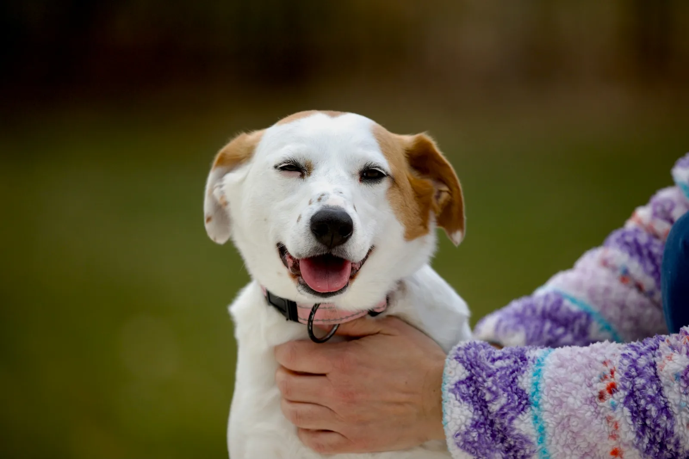
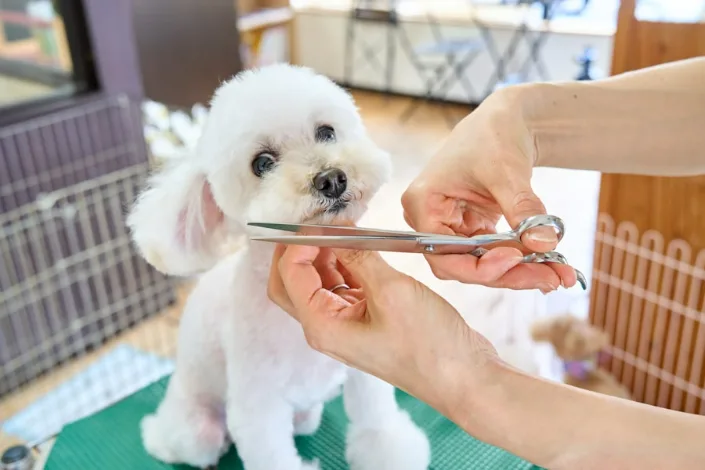
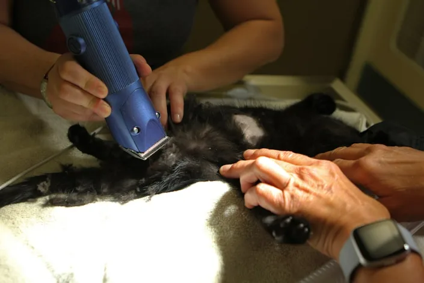
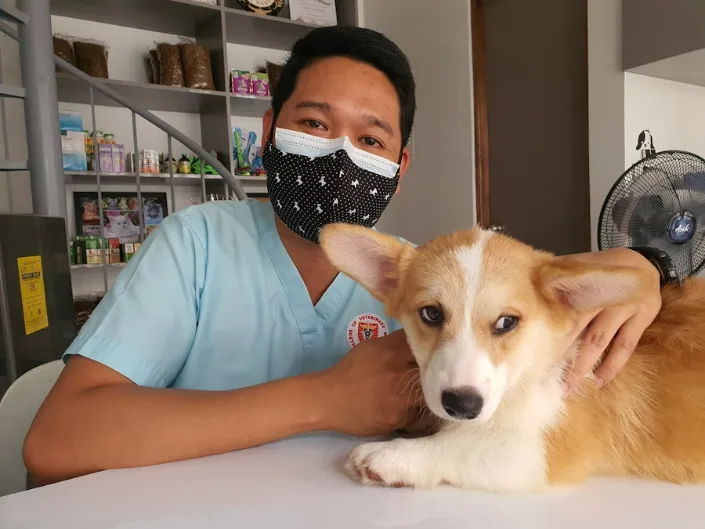
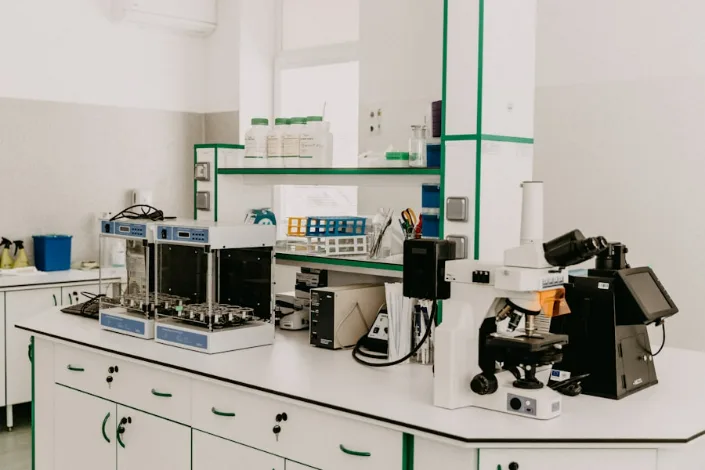
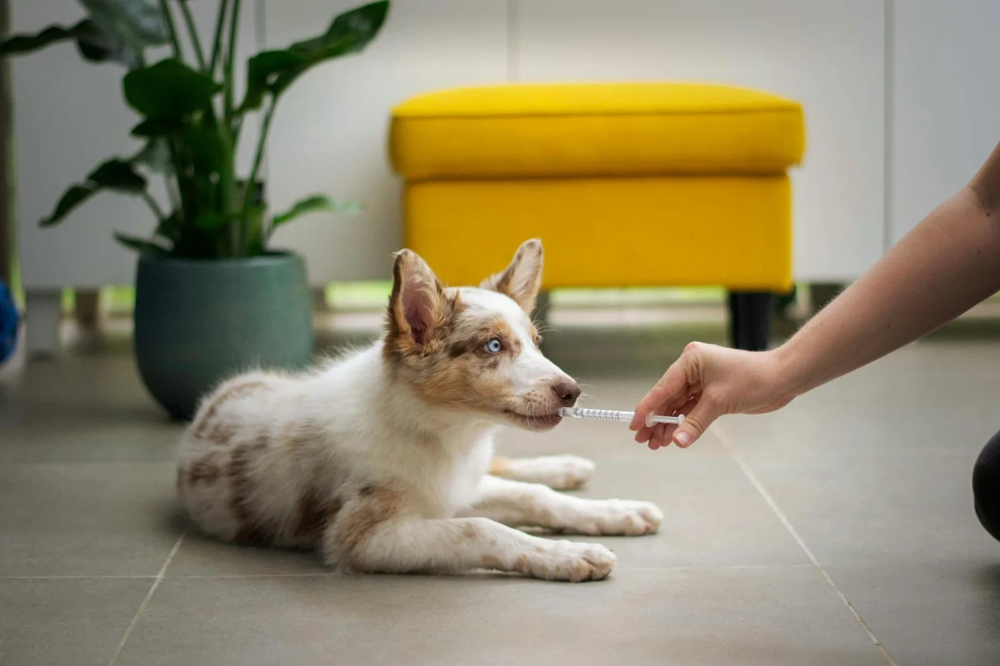
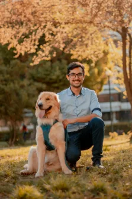
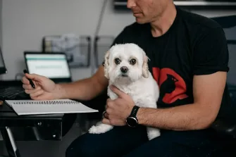
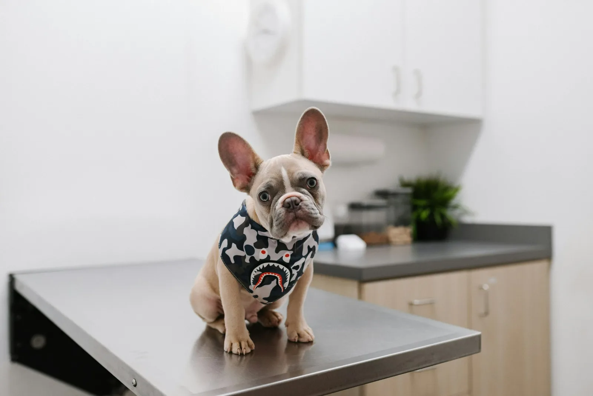

Open 7 days, walk-ins welcome
Good care, close to home.
Wellness, dentistry, surgery, urgent care and diagnostics under one roof. Book in about a minute, no phone queue.
Next available today, 3:40pm Same-day slots held back until 9am
They found the lump my last vet missed. Scan booked the same week, biopsy done before I had time to spiral.
Maya R., owner of Juno, 7yr rescue lab01 · What we treat
Every kind of care
your animal needs,
under one roof.
From a first puppy vaccination to senior blood work, the same team follows your animal through every stage of its life. Diagnostics, dentistry and surgery all happen in this building, so nothing is handed to a stranger and nothing waits on a referral.
Wellness & vaccines
Annual exams, puppy and kitten courses, parasite prevention and weight plans.
Book a wellness exam
Grooming
Full grooms, baths and blow-dries, nail trims and de-matting, taken at the pace a nervous animal can handle.
Book a groom
Soft-tissue surgery
Neutering, lump removals and exploratory work, with monitored recovery.
Ask about surgery
Urgent care
Same-day slots held back daily for the things that cannot wait until Tuesday.
See today's slots
In-house diagnostics
Bloods, ultrasound and digital x-ray read the same day, not sent away.
Book diagnostics
Cat-friendly care
Separate feline waiting, pheromone rooms and low-restraint handling.
Book for a cat
02 · Book online
You're booked.
03 · Your first visit
What actually happens when you arrive.
You should never have to guess what you are walking into, or what it will cost. Here is every step of a first visit, start to finish, so you and your animal both know what to expect before you leave the house.
Arrive
Cats go left to the feline room, dogs right. No shared waiting bench.
Exam
Twenty minutes, not eight. Your vet does the handling, not a stranger.
Plan and price
Written options with costs before anything is agreed. Nothing starts on a guess.
Follow-up
Results by text the same day, and a call from the vet who saw you.
04 · Your vets
One vet who knows your animal,
not a rotating roster.

Dr. Priya Raman
Lead veterinarian, soft-tissue surgery
Fourteen years in general practice. Known for talking owners through an x-ray until it actually makes sense.
Dr. Tomás Herrera
Feline medicine, Cat Friendly lead
Built the separate cat wing. Will absolutely let your cat stay in the carrier for the first five minutes.

Dr. Ellen Boateng
Dentistry & diagnostics
Runs the in-house lab. If your dog needs bloods read today, she is the reason that happens today.
05 · Wellness plans
Spread routine care across the year.
Preventive care at a monthly price, no lock-in past twelve months.
Kitten & Puppy
$29 / month
- Full vaccination course
- Microchip and registration
- Six months parasite cover
- Unlimited nurse clinics
Adult Wellness
$41 / month
- Two full exams a year
- All annual vaccinations
- Year-round parasite cover
- 20% off dentals and bloods
Senior Care
$56 / month
- Everything in Adult Wellness
- Twice-yearly senior bloods
- Blood pressure monitoring
- Mobility and pain reviews
06 · Owners
What people say after the appointment.
★★★★★
Booked at 11pm on my phone for the next morning. Nobody made me call and sit in a queue while the dog was clearly in pain.
★★★★★
They gave me three options on paper with prices, and said plainly which one they'd pick. First time I have not felt sold to at a vet.
★★★★★
The cat side is genuinely separate. Mabel did not hear a single dog and came out of the carrier on her own, which has never happened.

07 · Visit us
412 Alder Row, Fernbank
Parking behind the building. Enter from Mill Lane.
| Monday to Friday | 7:30am to 7:00pm |
|---|---|
| Saturday | 8:00am to 5:00pm |
| Sunday | 9:00am to 3:00pm |
| Public holidays | 10:00am to 2:00pm |
After hours?
We share an out-of-hours service with Fernbank Emergency Vets, four minutes away on Mill Lane. Someone always picks up.
08 · Before you book
The questions we get asked most.
A standard 20-minute consultation is $68. Anything beyond the exam, such as bloods, imaging or medication, is quoted in writing before we start, and you can say no to any of it.
We hold same-day urgent slots back until 9am each morning rather than letting them fill weeks ahead. If the online times look full, call us, because the held slots do not always show.
Cats have a separate entrance, waiting area and consulting rooms, with pheromone diffusers and no dog noise. We examine in the carrier base where we can, and we will happily spend the first five minutes doing nothing at all.
We handle direct claims with most major insurers for treatment over $300. For smaller amounts it is usually faster for you to pay and claim back, and we send the paperwork the same day either way.
Yes, and we would rather you did. Pick your vet at the booking step and we will keep your animal with them wherever the diary allows.
Reminders that actually
arrive on time.
Vaccine due dates, seasonal parasite warnings for this area,
and nothing else.
One email a month. Unsubscribe in one click.
Ready when you are
Book in about a minute.
Pick the service, pick the time, tell us about your animal.
No phone queue, no callback, confirmed on the spot.